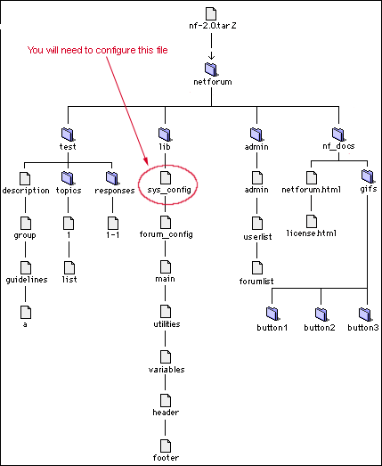
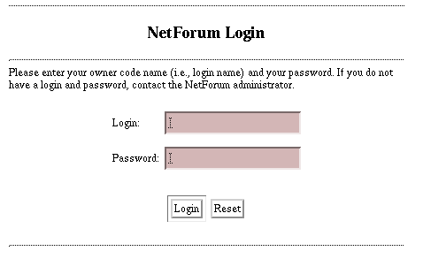
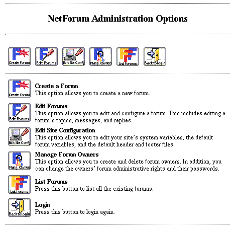
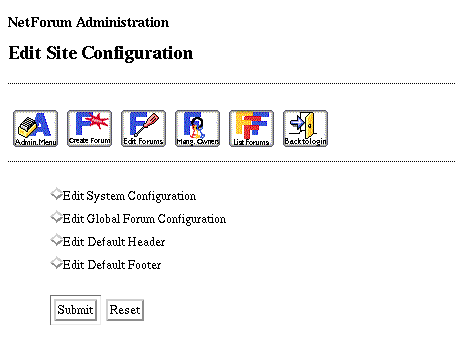

|
NetForum Documentation |
|||||||
ConfigurationIn order to get the admin file running you will need edit some files. You will need to configure the following files:
which perl at the command
line. This will give you the directory containing perl. Copy this, using
your favorite text editor to each of the files listed above.
Do not remove the text "-si" following the path to Perl
You will also probably want to customise the file nf_docs/netforum.html
The "sys_config" fileThis is the file where the system-wide configurations are set. It is not where information specific to individual forums is set.The first three entries must be configured before the program will run. In your favorite text editor make the following changes: $url = "http://www.biostat.wisc.edu"; Set the variable "$url" to the full URL of your Web site. Do not place a trailing slash (i.e., a "/" at the end). $base_url = "cgi-bin/NetForum"; This is the partial URL to the "NetForum" directory you received. Do not place a trailing or a leading slash. ScriptAliases are fine. $home_directory = "/usr/local/bin/httpd/cgi-bin/NetForum"; This is the full file system path to the "NetForum" directory you received. Place a leading slash, but no trailing slash. The remaining entries can be configured from the text editor or from the administrative forums provided with the program.
Now you should be able to run the admin script. From your favorite web
browser enter the following url:
You should see the login screen:  If you instead get a server error there is most likely a problem in the way you have one of the system variables configured correctly. You may want to read the faq. The first time you login you can login as user admin with password admin (You will want to change these soon.) This will present you with the NetForum adminsitrative options screen:

 To continue with the setup choose Edit System Configuration and click on submit. This will produce a list of all the current system wide variables and their values. This includes the three that you edited before to get netforum to run. Look thought the list and if any are incorrect for your system or you are unsure about what any mean hit the Edit System Variables button to edit the values. This will present you with a listing of all the variables, their current values and a short explanation of what each does. You can edit each of the values in the correspoding text area. Go on to administration and maintenance. Copyright © 1995, 1996 Board of Regents of the University of Wisconsin System. All rights reserved. |